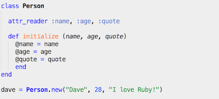

Culture: Pair Programming
March 29th, 2014
Now in the third week into the DBC pre-prep phase, I've had the opportunity to pair program with other cohort members 5 times, and wanted to write down a few thoughts on the value of the activity.
Solo or Playing in a Band?
To start off, pair programming is one of those kind of activities that if you choose not to do it, you probably would do fine. There are many programmers out there that program solo and make some great software. But if you do choose to try pairing, it has salient yet immense benefits to expand your breadth of knowledge with help from others. It's just really hard to realize the benefit unless you really do it.
I like the analogy of music to explain - although one can really excel as a solo guitarist or vocalist, they could alternatively learn some new tricks or grow in different ways by forming a band together and interactively collaborating with them. And sometimes the end output might be more wonderful or vibrant because of that interaction. The challenge of course, is that some bands work together better than others, and there is definitely a test of patience when there is a gap in skill/experience.
Benefits and Rewards
In pair programming, it is common to split up responsibilities between a "driver" and a "navigator". There are various interpretations to what exactly each role does, but I generally think of a driver to be the person actually coding, while the navigator focuses more on the story telling and narrative of what to code along the way. The right path to go can be an open collaborative discussion between the two along the way.
The particularly fun or redeeming aspect of this kind of collaboration is, that by doing this a few times it will be apparent that there are so many ways to solve a problem. Even for solving the same problem in different rounds, by changing who you pair with or which driver/navigator role you play, you might come up with a completely unique solution that wasn't apparent from the previous round. This is a very powerful reward that you would not get by going solo.
Patience is Key
After pairing up a few times, I have noticed that it may be easy to fall into trap of frustration when there is a gap in understanding of subject matter or skills between partners. Luckily, I have not felt this yet myself since I'm on the learning end, but I could easily imagine this problem bubbling up if I paired with a brilliant programmer in a different league than me. The only thing I can say to this is that regardless of expertise/skill, both sides of the pair should be patient in working together, and see the gap as an opportunity to learn new things. Regardless of skill, I feel like there is always something new to learn in either driver/navigator role, whether it be coding more efficiently or narrating the story in a different way.
Feedback and Criticism
blah blah blah... WIP
JavaScript vs. Ruby
March 28th, 2014
With Unit 1/Week 3 of bootcamp prepation behind me, I wanted to take a moment to reflect on some impressions left after coding through JavaScript and Ruby.
Quick Impressions
JavaScript and Ruby both support object-oriented, and have a relatively easier to learn syntax compared to other programming languages. Comparing syntax, would say that JavaScript is definitely influenced by C programming, while Ruby is less cryptic and easier to read/interpet even if you don't know a programming language. So far, I have seen JavaScript commonly applied in client-side (web browser) situations, while Ruby seems to be a more general-purpose language.
Methods and Functions
In JavaScript, it's common to define functions. In Ruby, it's common to define methods. For a simple "hello world" program, the syntax is pretty straight forward for either case.
JavaScript
Ruby
Constructor Function versus Class
JavaScript and Ruby can both be object-oriented, or in other words methods and functions of a similar kind can be created and defined as such. For example, there could be a object called "Person" which acts like a blueprint (also called prototype in JS), to be used for more specific people like "Dave" or "Jane". In the code , the blueprints are represented as either constructor functions (JavaScript) or a Class (Ruby), and the specific people can be represented as specific 'instances' or 'objects' of the blueprint.
This makes much more sense when comparing the code below. Both snippets of code are creating a Person with the attributes of name, age, and quote. After the blueprint is created, a specific instance called dave with unique attributes is being created. Syntax is slightly different, but both languages are very powerful from the magic of object oriented programming
JavaScript
Ruby

Summary
Reflecting on the last 2 weeks being focused on Ruby and JavaScript, with all the similarities in mind, I do still have to be honest to say that I a partial towards Ruby. I started both languages at the same time. Where I have had trouble recalling half of the JavaScript concepts due to syntax , Ruby is just easier to recall how to do the same things - probably because it's a very readable syntax for the common english-speaking citizen. Also, I have repeatedly been impressed with Ruby's zen-like elegance of being able to do more with less code, whether it be for setting up loops, conditionals, or processing arrays and hashes.
Unit 1/Week 2 Culture Exercise
March 20th, 2014
-
When you think of the times in your life where you’ve been the happiest, the proudest, or the most satisfied, which of the following values come to mind?
Accomplishment Accountability Achievement Activism Adventure Affection Ambition Autonomy Challenge Close relationships Commitment Community Compassion Competence Competition Confidence Conformity Control Coolness under fire Cooperation Courage Creativity Credibility Decisiveness Economic security Effectiveness Efficiency Enthusiasm Environmentalism Excellence Excitement Fairness Faith Fame Free time Freedom Friendships Growth Having a family Health Helping other people Helping society Honesty Hospitality Independence Influence Inner harmony Insight Inspiration Integrity Intellectual status Introspection Justice Knowledge Leadership Location Loyalty Meaningful work Mentorship Merit Money Movement Music Nature Openness Order Patriotism Peace Persistance Personal development Physical challenge Pleasure Power and authority Privacy Public service Purity Quality Recognition Reputation Responsibility Romance Security Self-knowledge Self-reliance Self-respect Serenity Sophistication Spirituality Stability Status Tranquility Truth Vibrancy Volunteering Wealth Will-power Wisdom [add any that I missed]
Pick one value and write a couple of sentences about why one of the values you chose is important to you.
It's really hard to pick just one among the many important ones in this list. Achievement, mastery and purpose are important things I believe everyone strives to have. The emotions I picked above represent the satisfaction I get when something meaningful has been accomplished.
In general, I try to live up to these values:
Disagree 1 ----- 2 ----- 3 ----- 4 ----- 5 Agree
What was the last topic that someone asked for your advice on?
I recently had students ask me for career advice, and was very excited to be able to help tap into their passions.
Why is JavaScript so popular in web development?
March 20th, 2014
I took a look around the web and thought that this blog article was very comprehensive in explaining why JavaScript is so popular. Here is an excerpt of it:
- Node.js
Node.js has reduced JavaScript's need to rely on other technologies such as PHP or .Net to run on the server and serve information up. It is built on Google Chrome’s JavaScript Runtime engine called V8.
- JavaScript is a Natural fit for the Web
JavaScript is fully supported by all modern browsers and works seamlessly with HTML/DHTML, CSS3 and background services via AJAX.
- AJAX
AJAX (Asynchronous JavaScript and XML) and XMLHttpRequest allow for more efficient design to ask the server for information without reloading a web page.
- JavaScript is Easily Extensible (jQuery, Prototype, Dojo)
Developers have written several very good libraries to support the language and allow it to easily manipulate web pages with just a few lines of code (like jQuery)
- JavaScript Allows for object oriented design
Using JavaScript you can easily create objects and use special OOP design patterns, but flexible enough to not force using OOP.
- JavaScript is Easy to Debug
Any error you run into can be traced back to the exact place it occurred using developer tools.
- Abundance of Developer Tools
Popular browsers have adapted to giving power users enough freedom to look under the hood and see or even change the JavaScript that’s running behind your favorite sites.
- JavaScript is a Prototyping Language
Suited for very rapid and flexible development.
- JavaScript is Easy to Edit
JavaScript does not need to be compiled, so all you need to write it is notepad or any other plain text editor.
- JavaScript is Easy to Learn
JavaScript is easy to pick up because of the very flexible nature of the language, is widely standardized across common browsers
Comparing Websites (Unit1/Week1)
March 16th, 2014
Why is this one of your favorite sites?
BC: Because it’s so intuitively useful as a info sharing tool
HBO GO: Because it’s TV binge-viewing heaven
PC: Best free financial management app
What area of the site is your eye drawn to when looking at the homepage? Stand back further, what area is your eye drawn to now? Is that area the most important area of the site?
BC: In the middle and top nav. Always interact w it in the same way.
HBO GO: Basically everywhere because all the shows have great images. It’s designed for consuming video, which I like a lot.
PC: Attention goes to the left side nav with portfolios/accounts. Right is good charts etc. per account so a user will use both.
How would you describe the website visually? List 5 adjectives. (i.e. "pretty", "elegant", "simple", "dark", "cluttered", "basic" etc)
BC - Simple, somewhat cluttered. Sketchbook like. Fun.
HBO GO - Cool. Visual. Engaging
PC - Professional, classic, organized
What problem does this website solve? What content does it have?
BC: Projects to collaborate on. The users create their own content to share
HBO GO: View tons of movies and shows on the go
PC: Consolidate and manage investments
What 5 adjectives would you use to describe the content, focus, and purpose of the site? (i.e. "practical", "fun", "whimsical", "silly", "serious" etc) How does that compare to the adjectives you used to describe the site visually?
BC: Professional, not glamorous, practical. The website brings simplicity and fun to a boring subject matter.
HBO GO: Recommending, Listing, Informing, Catalog
PC: Serious, Professional, Informative, Advising
How easy is it to find what you are looking for from the homepage? How about from another page?
For all 3 websites, it’s pretty easy to find everything. The user flows are very natural and each site is very focused in the subject matter.
How easy is it to browse through all the content of the site?
BC: Although they try to keep it simple, it does get cluttered and hard to find things
HBO GO: Excellent experience. It's planned out for tons of content.
PC: Pretty straightforward for simple things
How do you feel after being on the site for a while? (i.e. "bored", "happy", "anxious or hyper", "like I wasted a lot of time” etc)
BC: productive but wouldn’t want to stay long
HBO GO: I’d stay here as long as there was stuff to watch
PC: Not a place I’d stay at, but very useful to use regularly
Does the site sell anything? If so, have you purchased any of it? Why or why not?
BC: Yes, use their service at work
HBO GO: Yes, HBO GO comes free with Cable/HBO subscription
PC: Yes, asked for help from financial advisor service, as well as free service.